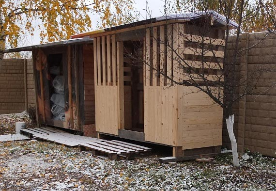

Дровница
Простой каркас, и более прочный каркас.
2014-10. В старой дровнице осталось ещё пара кубов дров. При попытке заказать дрова для очередного сезона оказалось, что минимальный заказ от 5 кубов. Поэтому я решил сделать ещё один сарайчик для дров размером ровно 5 куб.м. = 2.5×2×1
В этот раз я нарисовал чертёж, сфотографировал частично сделанную постройку, и законченную. Она в точности повторяет конструкцию, построенную 3 года назад.
Каркас сделан из досок 5×15см, которые я использую при любом удобном случае, так как их осталось много после окончания стройки и разборки лесов вокруг дома.
Опорные столбы и пол опираются на "фундамент" или то, что используется вместо него. Я оцениваю, что сарайчик весит 200 кг, и при необходимости его можно перетащить в другой конец дачи не разбирая. В другом конце дачи у меня есть бетонный фундамент подходящего размера оставшийся от нереализованной бани. А сейчас я поставил дровницу на ровно лежащие доски.
2014-10-10 Каркас с дверью, крышей и поперечными досками
на стенах, но без обшивки
{kind=link}
Для обшивки задней стены я использовал остатки вагонки, а спереди и с боков использовал новенькие строганные доски 2×10см. Доски покрыты защитным лаком. Для крепления обшивки каркас дополнен горизонтальным поясом спереди и сзади на половине высоты. Дверной проём сделан из реек 4×4см. Из таких же реек сделаны плоскости двухскатной крыши. Крыша держится на доске 5×15см по центру и на двух рейках прибитых вдоль передней и задней стены дровницы. Крыша выступает во все стороны за края каркаса на 10-40см.
Дверь задумана не закрывающейся, стены - наполовину продуваемые. Задача этого домика - сушить дрова. Также можно хранить в нём лопаты и прочие дачные вещи. Для покрытия крыши использован старый рекламный баннер как и на старой дровнице. За 3 года он заметно выцвел, но всё ещё не протекает. Полотно баннера прибито строительными скрепками.

2014-10-18 Дровница готова, но пока без дров
И вот привезли дрова. 5 кубометров точно поместились.
2014-10-24 Дровница с дровами
Газа у нас нет. Основное отопление - электрическое, частично с тепловым насосом (кондиционер наоборот). Как устроено отопление, освещение и наблюдение за дачей через интернет в общих чертах рассказано на страничке Умный дом. При использовании 4-5 упаковок дров в сутки печка в среднем даёт 4 квт тепла. Это половина от потребности в холодную зиму. Особенно важна печь при отключении электричества, а также для того, чтобы пить глинтвейн, глядя на огонь. Теперь появилось похожее летнее развлечение на даче - пить кофе, гуляя вокруг нашего пруда, сделанного в этом году.
2018-02-04 Прошло 4 года
2014-10